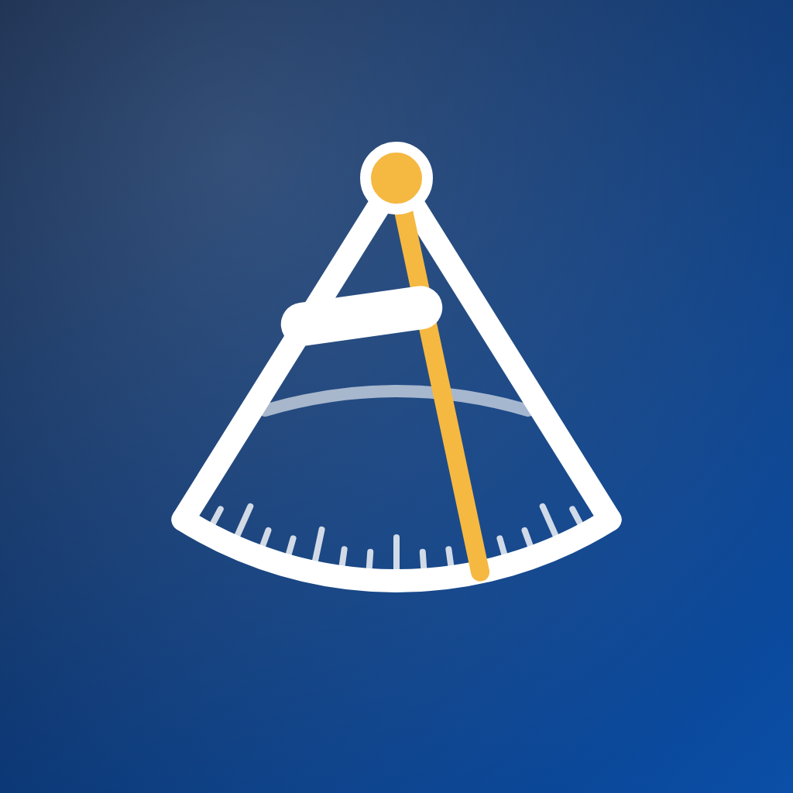

Sextant
Seafarer documents, sea time and days to home
Support
Questions, bugs or ideas? Write to demchukartem01@gmail.com. We reply within 2 working days.
Partnerships & advertising
Training centres, crewing agencies, maritime brands and media: for advertising, partnerships or PR write to demchukartem01@gmail.com with the subject "Partnership".
FAQ
Where is my data stored?
Only on your phone. Sextant has no account and no cloud copy of your documents.
Only on your phone. Sextant has no account and no cloud copy of your documents.
How do I move to a new phone?
Settings → Backup → Create backup. Save the encrypted .sextant file to iCloud Drive, Files or send it to yourself, then on the new phone choose Restore and enter the same password.
Settings → Backup → Create backup. Save the encrypted .sextant file to iCloud Drive, Files or send it to yourself, then on the new phone choose Restore and enter the same password.
I forgot my backup password.
The backup is encrypted on your phone and we never see the password, so it cannot be recovered. Create a new backup.
The backup is encrypted on your phone and we never see the password, so it cannot be recovered. Create a new backup.
Reminders don't arrive.
Check iPhone Settings → Notifications → Sextant and turn on Allow Notifications. Reminders come 90, 30 and 7 days before an expiry date at 10:00.
Check iPhone Settings → Notifications → Sextant and turn on Allow Notifications. Reminders come 90, 30 and 7 days before an expiry date at 10:00.
How do I delete all my data?
Delete the app. Everything is stored inside it on your device, so nothing remains anywhere else.
Delete the app. Everything is stored inside it on your device, so nothing remains anywhere else.
Поддержка
Вопросы, ошибки, идеи — пишите на demchukartem01@gmail.com. Отвечаем в течение 2 рабочих дней.
Сотрудничество и реклама. Учебные центры, крюинги, морские бренды и медиа — пишите на demchukartem01@gmail.com с темой «Сотрудничество».
Где хранятся данные? Только на вашем телефоне. Аккаунта и облачной копии документов нет.
Как перенести на новый телефон? Настройки → Резервная копия → Создать, сохраните файл .sextant, на новом телефоне выберите «Восстановить» и введите тот же пароль.
Как удалить все данные? Удалите приложение — данные хранятся только в нём.
Как перенести на новый телефон? Настройки → Резервная копия → Создать, сохраните файл .sextant, на новом телефоне выберите «Восстановить» и введите тот же пароль.
Как удалить все данные? Удалите приложение — данные хранятся только в нём.